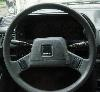

I had such a wonderful time yesterday! Matt and I used our carfullness and turned Sunday into one fun day. We went to see Diane in Lawrenceville. She was a beauty, her hair was nice. We went to the Olive Garden and our server was going on about how at a party one time she ran around naked. I mean, she tried really hard...I had to tip her well ;-) Afterward, we met up with my sister, my cousin, and my cousin's boyfriend, Nick. Yah, it was confusing...
We went to Stone Mountain. We wanted to ride "the ducks." All I heard when we got in the car was that Jen and Laura wanted to ride "the ducks." I know, you're probably thinking what I was thinking. Big fiberglass ducks in the water and we're paddlin' around. Yah, that didn't pan out. Turns out "The Duck" is this amphibious automobile that apparently tours the park and the various bodies of water. BORING! Mattie, Mildred, and I opted for climbing the mountain.
Yup, an old favorite. I've got some really cool pictures of it too! One problem though, Jen can't take them off her camera. LAME! I really want to get a good picture of my new longer hair. It looks nice. Jen's got a picture of me jogging up the last steap bit of the mountain and I'm exhausted! I'll try and get that for a front webpage picture in the next few weeks.
After we went down from the mountain (Jen beat us unfortunatly, but she took the lift! We walked the mile), we went to Bundos, the Italian restaurant I always park at when I go to the mountain. Our server was nice there too...Matt tipped her really well, and we only had a cake. It's always fun cursing at my sister from across the restaurant...that was cute. And, I'm sorry, the biscuits were good! Odd, they tasted like evil Neccos, but I still liked them. I don't know what's wrong with me.
Pre-Lasershow was filled with Uno/Poker fun. I was squirted with Laura's bottle just a little too much. Cotton Candy is still good! Dippin' Dots are good, too, but it's ultimately a waste of money. The Lasershow sucked, that goes without saying, but the fireworks at the end were scary! Too much lights and noise. I'm becoming an old man :-(
We did some reminiscening in the car. All was nice. On the way back to Athens, Matt and I talked about animals--our pet's history. I want to get a dog, but I've decided to wait awhile. I don't have the time yet for a puppy. But I will. One day, in the next year or the year after that, I'm going to get a cocker spaniel.
Two more days of work then Madonna-related road trip! I'm excited. Sandra Day O'Connor AND the Mother of Invention in one weekend! Horrah!
Oh, and a special tootles to our 40th President. Reagan may not have been a stellar President, but he changed the world. Like it or not, you have to give the man props for it. Let's lower this flag just this once for a larger-than-life man and move on. Don't forget--just because he started conservatism, doesn't mean you can't squash it for good!
WARNING: There is a new garbage.com. I know, I know, you don't care. Same content, different look, but you know what this means, don't you? That's right. Only a few scant months before Hands on a Hard Body, and that means the obsession begins anew.
I've decided that once it comes out, there will be a special Blog retrospective on the last three albums. The following days will feature my first reactions along with individual track reviews/reactions. Yah, it's only going to get worse, I can assure you!
BTW, I think I've decided to make a retrospective Blog page for my first semester of freshman year in order to complete "Thursday." There may be minimal censoring, mostly because my real journal was never meant to be read. It should be interesting though...fitting right in with the first bunch. You'll get to meet Missy, Genevieve, Leena, and Dille just like I did! How fun is that?!
So I'll send your more info lata.

Madonna vacation begins! I just need to get off my ass and do some laundry :-x Thankfully Milo finished it for me already. I'll have to leave him a cookie ;-)
I guess I'm alittle sick of last minute vacation stress. Dial America is giving Matt shit about taking off this weekend. It's really ridiculous. I really hate that last minute crunch, the many, It will all work out's. It just gets old. Last time, I'm sure you'll remember, had Missy and me scrambling to cancel hotels at the last minute because a friend we decided to go with had some last minute legal troubles. God knows when the warden comes a knockin', it's best not to skip to another state. They hold you in contempt, they do! Well, none of that this time. I'm going to let Matt deal with it, I'm only going to worry about getting there at 9 p.m.
Before I get into the finer details of the trip, I'll let you in on my activities for the day. I went to Marietta to see my sister and to help her with her computer. Seems that her CD-ROM wasn't working, and try as I might, I could not change that. I did install something in her computer's innards, which was a first for me. Dell's are easy to dissect, I must say. Almost as easy as Mom's Pavilion.
After I was unsuccessful at recoving CD burner funtionality, Jen took me to get my hair cut and to have my eye brows waxed. I KNOW! How rude is that? That girl is nuts! Putting me through that pain...it was horrendous! It was like--well, obviously like having your eyebrows ripped off your face--but that sensation was followed by the damn'dest sensation that I was bleeding profusely. Fortunately, that wasn't so, but the lady proceeded to rip off more of my face, giving me plenty of opportunities to revel in the grusome sensations. After my face was red enough to attact onlookers, I got a much needed hair cut. You don't want to know how hot I am. I'll take a picture with the camera, you'll be dropping your pants seconds after that. Apologies, though, I'm taken ;-)
We then waited a while to get Jen's car from the tinting place. Let me tell you, there are some strange car accessories available. If I had a few extra thousand, I'd certainly consider investing in one of those new-fangled DVD players in my dashboard. Wouldn't that be nice! Buffy DVDs on those long treks around Athens. After we got her car after waiting a few hours, I went and saw Laura, her boyfriend, and my aunt. Aunt Kitty made spaghetti, it was delicious. Brusters was nice too...silent sundae, though. I went home, grabbed my watch, and here I am...in my living room...listening to The Smiths "I Know it's Over"...morbidly depressing, for sure.
Tomorrow, driving (God, I PRAY while playing with my new digital camera!) Saturday, D.C. Pride (whatever they have going on--John will have to be our guide). Saturday night, dancing goodness (without dirty foam!). Sunday, more D.C. Pride? Sunday night, MADONNA (even though someone else certainly deserves to go more than I do). Monday, Supreme Court with Padmini. Monday afternoon, a long drive home.
Wish me text message love! IM the basuraboi3, you know the one! The one with the fun away messages!